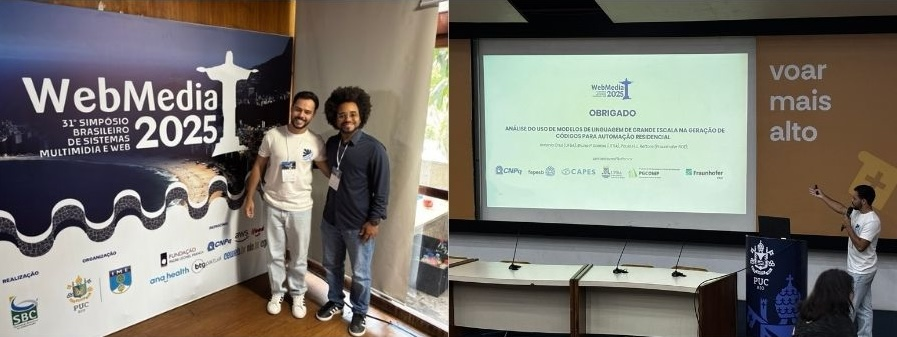
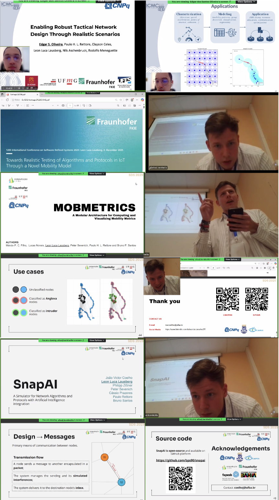

Apresentações do projeto em conferências, seminários e eventos científicos nacionais e internacionais.
O projeto SiR.AI marcou presença no 31º IEEE Symposium on Computers and Communications (ISCC 2026), com dois artigos científicos aceitos e apresentados. Os trabalhos abordam desafios de escalabilidade em redes definidas por software sob mobilidade e otimização de horários ferroviários com aprendizado profundo, refletindo a amplitude e o impacto da pesquisa desenvolvida no projeto.
Artigos apresentados:
O projeto SiR.AI teve grande destaque no SBRC 2026 - Simpósio Brasileiro de Redes de Computadores e Sistemas Distribuídos, realizado em Praia do Forte, Bahia, um dos principais eventos nacionais na área de redes e sistemas distribuídos. Quatro artigos científicos foram aceitos e apresentados, refletindo esforços colaborativos entre diferentes instituições e reforçando o compromisso com a pesquisa aplicada e de impacto.
Artigos apresentados:
SBRC Workshop de Trabalhos de Iniciação Científica e de Graduação:
Apoio: CNPq - Conselho Nacional de Desenvolvimento Científico e Tecnológico (CNPq) [444077/2024-3, 407568/2025-5], e FAPESP (Fundação de Amparo à Pesquisa do Estado de São Paulo), em conjunto com o Comitê Gestor da Internet no Brasil (CGI.br) [2018/23097-3, 2020/05182-3 e 2025/00513-5].
Durante o WebMedia 2025 - 31º Simpósio Brasileiro de Sistemas Multimídia e Web, realizado na PUC-Rio no Rio de Janeiro, foi apresentado o trabalho intitulado "Análise do uso de Modelos de Linguagem de Grande Escala na Geração de Códigos para Automação Residencial". O trabalho foi desenvolvido por Antonio Cruz (Universidade Federal da Bahia), Paulo H. L. Rettore (Universidade Federal de Minas Gerais) e Bruno P. Santos (Universidade Federal da Bahia). A apresentação abordou a aplicação de modelos de linguagem de grande escala (LLMs) na geração automatizada de códigos para sistemas de automação residencial, explorando as potencialidades e desafios dessa abordagem inovadora no contexto de ambientes inteligentes.

Durante a 12ª Conferência Internacional sobre Sistemas Definidos por Software (SDS 2025), realizada em Lyon, França, de 2 a 5 de dezembro de 2025, foram apresentados quatro artigos científicos desenvolvidos no âmbito do projeto SiR.AI. Os trabalhos aceitos abordam temas fundamentais para o avanço de sistemas resilientes e inteligentes, incluindo modelos de mobilidade realistas para testes de algoritmos e protocolos em IoT, criação de cenários realistas para aplicações de rede robustas, arquitetura modular para computação e visualização de métricas de mobilidade, e integração de inteligência artificial em simuladores de protocolos de rede. As apresentações contaram com a participação de pesquisadores das instituições parceiras do projeto, incluindo a Universidade Federal de Minas Gerais, Universidade Federal da Bahia, Instituto Fraunhofer FKIE e outras instituições colaboradoras internacionais.
Artigos apresentados:
